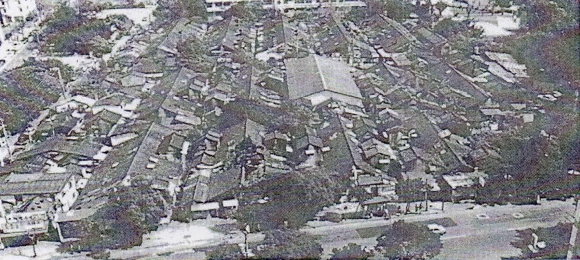
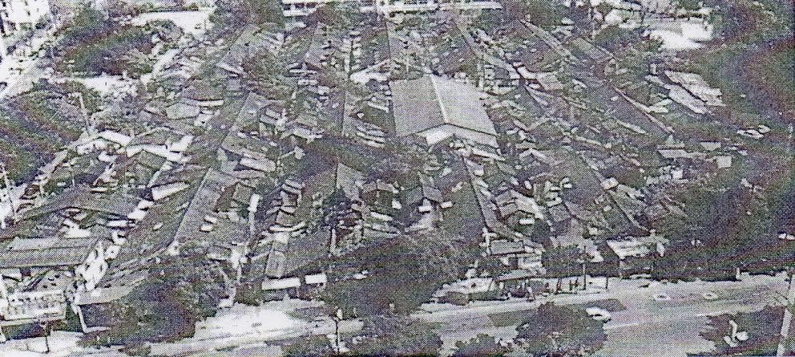

Basic structure
 

The building in 44 South Village was built by woods, fences, lime, and tiles at first, then bricks were added to stabilize the structure afterwards. For the continuous type of sloping roof-style bungalow, the overall configuration is designed with "fish bone shape" in mind to divide into front and the back of the household.The most original building in 44 South Village is a studio, which has living and dining room as a same room and bedroom at the back.
Lacking spaces, houses without bathroom or toilet and illegal rooftop add-ons were very common at that time. The kitchen or the bathroom was usually built between the sloping roof or the alley lane outside the house. Without water facilities in the village, residents may only use the public bathroom and carry the water from public faucet on their own before the shower. And also bad soundproof, because of the walls are delicate. When damaged, they only repaired with simple plastic boards, plywood,or discarded advertising billboards.
Before the demolition, some of the buildings had been converted into second-floored, some facing Zhuang road have been demolished and converted into storefronts because of the road widening.
Narrow alley-lane is usually the household's back alley, which connected the bungalow together.Although it's narrow, it does make the neighbors contact deeply. And to the wider alley, is usually the main entrance to the door facing the road, in addition to the traffic between the channel, but also the place of social activities for the residents.